前言
最短路径是图论的经典问题之一，主要是为了寻找源点到终点的最短路径长度是多少。“最短”这一词在面对不同的问题时含义不同，可以代表路径长度最短、花费最少等，视不同问题而定。
这篇blog主要记录了几个求解最短路径的经典算法。
图的存储
在求解图论问题时，一般都需要将图存储起来，图的存储形式主要有邻接矩阵、邻接表、链式前向星等，根据图特征不同，不同的存储结构有着各自的优点。
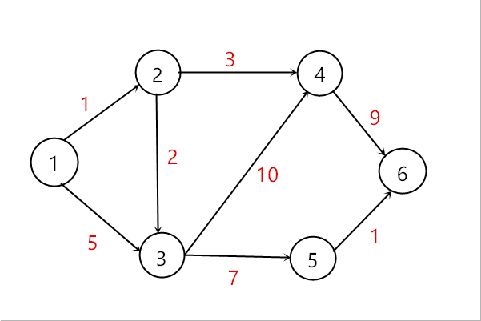
邻接矩阵
邻接矩阵使用二维矩阵来描述结点之间的关系，例如用m[i][j]描述结点i与结点j的关系，若i和j没有直接相连的边，则用一个较大的值表示即可，例如∞。邻接矩阵适合用于稠密图和无重边的图，特点是取边非常的快，只需要O(1)的复杂度，缺点是无法存储重边，对于稀疏图会浪费大量的空间。
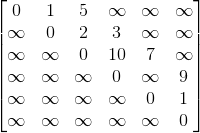
在编程时，一般直接用二维数组对图进行存储。
邻接表
邻接表是用链表的形式对图进行存储。每一个结点i都有一个头指针head[i]，头指针连着每一个与结点i相连的结点的信息。邻接表适合存储稀疏图，可以存储重边，每次需要时才动态分配空间，不会赵成大量的空间浪费，但是取边时需要遍历结点i的链，取边较慢。
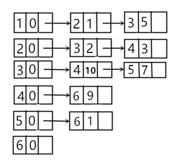
在编程时，可以用指针的方式或者vector来实现邻接表。vector在使用时比指针简单，但是vector在存储不下时会重新开辟两倍空间，会花费一些时间，还有可能导致内存超限。
链式前向星
链式前向星就是用数组模拟邻接表，将所有的边都存在一个数组里面，每一个结点i都有一个head[i]代表头结点，具体如下：
1 | const int maxn = 1e4; |
最短路径
要求解最短路径，就要保证图中没有负权回路，因为有负权回路的话，是无解的，每经过一次负权回路最短距离都会减小，经过无限多次那么就无限小了，永无止境。
比如下面这样的图就是无解的。
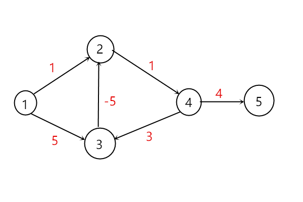
BFS
BFS是Breadth First Search的缩写，翻译成中文叫做广度优先搜索，若图的边权都为1时，可以用BFS来寻找最短路径，比较常见的是用于一些迷宫问题。BFS是用一个队列来维护的，若源点s到i结点的最短路径长度确定，那么与i相连的j结点最短路径也就被确定了(前提是j结点还未被更新过)。
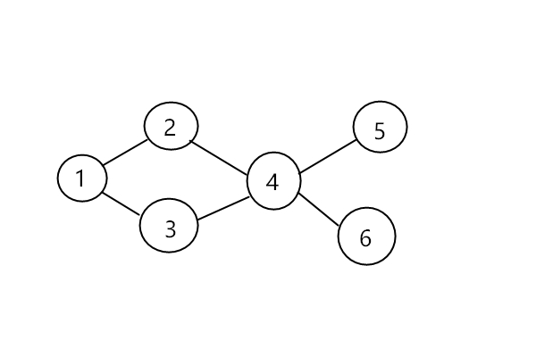
BFS的执行过程很像一个水波，从源点s开始，一圈圈的向外搜索所有的点。代码实现如下：
1 | const int maxn = 1e4; |
Dijkstra
Dijkstra’s algorithm译为迪杰斯特拉算法，是一个叫迪杰斯特拉的荷兰计算机科学家提出的，据老师说这是他有一天逛街的时候想到的算法(膜拜orz)，Dijkstra算法是一个非常经典的算法，他能够处理不含负权的图，找出从源点s到其他任一顶点的最短路径。
Dijkstra算法将顶点分成两部分，一部分是已经确定最短路径的顶点集S，另一部分是还未确定最短路径的顶点集U。最开始的时候顶点集S只包含源点s，之后每一次都在顶点集U中选取一个顶点i，使得源点s到i的距离是最短的，那么i顶点的最短路径就确定了，将i顶点加入到顶点集S中，直到最后所有的顶点都在S中就停止。
Dijkstra算法的图示如下：
以下图为例，红色的是边的权值
刚开始执行，蓝色的代表源点s到顶点的最短距离，此时源点为1。
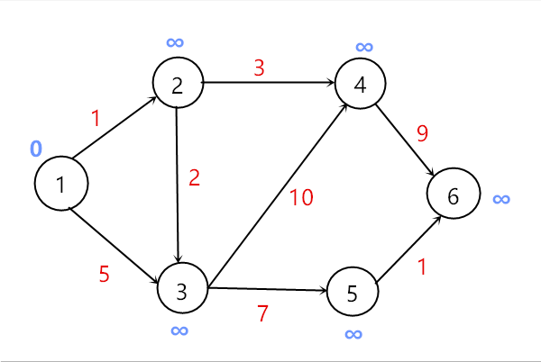
用顶点1更新相邻顶点的最短距离，d[2]变为1，d[3]变为5，然后选取顶点2加入到顶点集S中。
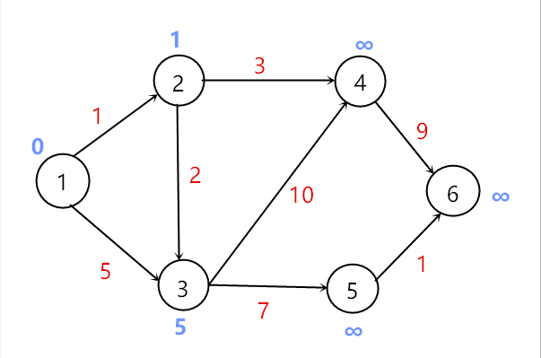
用顶点2去更新相邻且不在顶点集S中的顶点，此时将顶点3加入到顶点集S中。
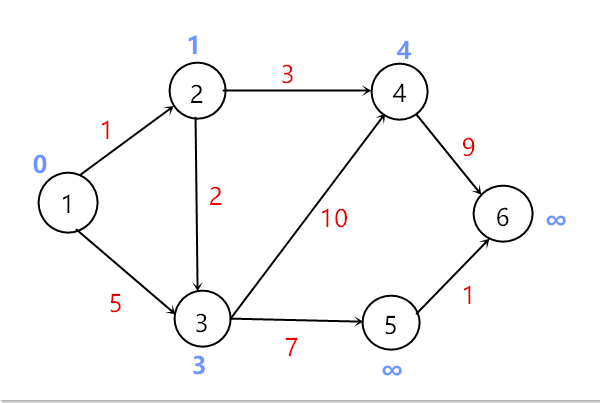
将顶点4加入到顶点集S中
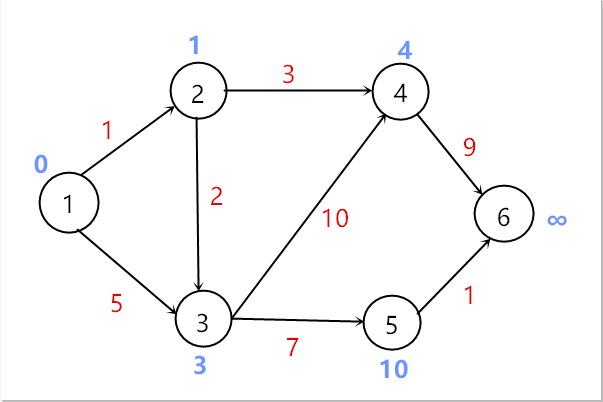
选取顶点5加入到顶点集S中
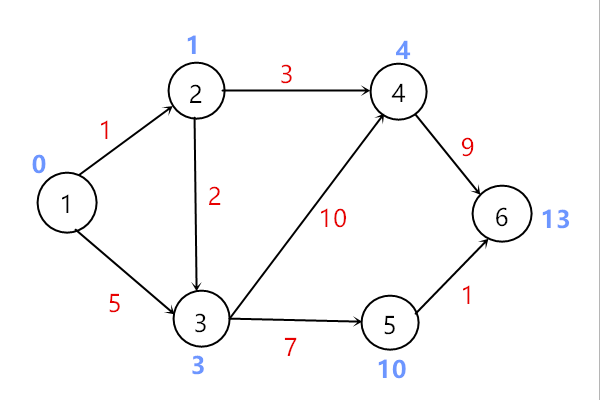
选取顶点6加入到顶点集S中，所有更新完毕，算法结束。
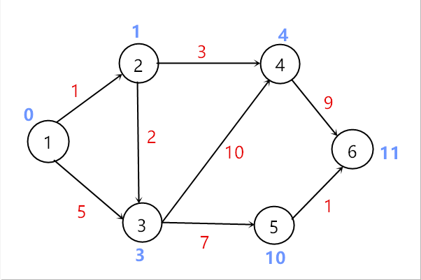
代码实现如下：1
2
3
4
5
6
7
8
9
10
11
12
13
14
15
16
17
18
19
20
21
22
23
24
25
26
27
28
29
30
31
32
33
34
35
36
37
38
39
40const int maxn = 1e4;
const int inf = 0x3f3f3f3f; //常用于表示无穷大
//d数组用来记录源点s到顶点i的最短距离
//v表示该顶点是否在顶点集S中
//g邻接矩阵存图，g[i][j]表示i到j的边的权值，无边时为inf
//n为顶点数量
int d[maxn], v[maxn];
int g[maxn][maxn];
int n;
void dij(int s)
{
//初始化v数组，全部为0，表示都不在顶点集S中
memset(v, 0, sizeof(v));
//d数组初始化为s到i的距离
for(int i=1;i<=n;i++)
d[i] = g[s][i];
//将源点加入顶点集S中
v[s] = 1;
//循环n次
for(int i=1;i<=n;i++)
{
int u = 0; //记录不在顶点集S中且距离最小的顶点
//遍历寻找
for(int j=1;j<=n;j++)
{
if(!v[j] && (u==0 || d[j] < d[u]))
u = j;
}
//u为0表示所有顶点的最短路径都确定，算法结束
if(u==0)return ;
//将顶点u加入到顶点集S中
v[u] = 1;
//更新与顶点u相连且不在顶点集S中的最短距离
for(int j=1;j<=n;j++)
{
d[j] = min(d[j], d[u]+g[u][j]);
}
}
}
用这种方式实现Dijkstra算法的时间复杂度为O(n²)
Dijkstra优化
其实Dijkstra算法能够用优先队列进行优化，每次取新加入到顶点集S的顶点u不需要遍历所有的顶点。优先队列维护的是一对值，用pair存储，first存储的是该顶点的最短距离，second存储的是该顶点的编号，优先队列每次取first最小的对出来，相当于找到了要新加入到顶点集S的顶点。但是有一种情况需要注意，有可能在优先队列的结点i的最短距离被更新了，即优先队列里面记录的信息已经过时了，这时候取出来的话就要抛弃它。具体代码如下：
1 | const int maxn = 1e4; |
该算法的复杂度被降到了O(m+nlogn)
Floyd
Floyd-Warshall的算法翻译过来称为弗洛伊德算法，是用于求解任意两点间的最短距离的算法，并且能够处理带负权的图。时间复杂度为O(n³)。
Floyd的基本思想是，判断i->j的最短路径是否需要经过k点，即若d[i][j] > d[i][k] + d[k][j]，则进行更新。代码写起来也非常的简单，如下：
1 | int g[maxn][maxn]; |
虽然Floyd写起来简单，但是当顶点数一大时，这算法耗费的时间就感人了。
Bellman-Ford
Bellman–Ford算法中文名为贝尔曼-福特算法，是由理查德·贝尔曼和莱斯特·福特共同创立的，所以这个算法将两个人的名字一部分结合起来命名。因为对于一个含有n个顶点的图，最短路径中除源点s外的最大顶点数为n-1，所以最多需要进行n-1次松弛(更新)，并且Bellman-Ford可以处理带负权的图，并且可以用于判断图中是否含有负权回路。因为含有负权回路的话能够进行无限次松弛操作，当第n次遍历时仍有顶点能够被松弛，则说明这个图含有负权回路。
算法的具体执行过程可以看这个video。
代码实现如下：1
2
3
4
5
6
7
8
9
10
11
12
13
14
15
16
17
18
19
20
21
22
23
24
25
26
27
28
29
30
31
32
33
34
35
36
37
38
39
40
41
42
43
44
45
46
47
48
49
50
51
52const int maxn = 1e4;
const int inf = 0x3f3f3f3f; //常用于表示无穷大
//边结构体，记录u->v的边，权值为w
struct Edge
{
int u, v, w;
Edge(int uu, int vv, int ww) { u=uu; v=vv; w=ww; }
Edge(){}
}e[maxn];
int edgecnt; // 边的数量
//加边操作
void addEdge(int u, int v, int w)
{
e[edgecnt++] = Edge(u, v, w);
}
int n; //顶点总数
int d[maxn]; //记录最短距离的数组
//存在负权回路则返回true，否则返回false
bool bellman_ford(int s)
{
//初始化
memset(d, inf, sizeof(d));
d[s] = 0;
//进行n-1次松弛操作,第n次检查是否含有负权回路
for(int i=1;i<=n;i++)
{
//标记是否有更新
int flag = 0;
for(int j=0; j<edgecnt; j++)
{
//取边
Edge t = e[j];
int u, v, w;
u = t.u; v = t.v; w = t.w;
//若可以更新
if(d[v] > d[u] + w)
{
d[v] = d[u] + w;
flag = 1;
}
}
//若没有更新，则表示都是最短距离了，也不存在负权回路
if(!flag) return false;
//如果第n次松弛还有更新则存在负权回路
if(i==n && flag) return true;
}
return false;
}
Bellman-Ford算法的时间复杂度是O(n*m),还是比较慢的
SPFA
SPFA是Shortest Path Faster Algorithm的缩写，翻译成中文是最短路径快速算法，其实就是用队列优化的Bellman-Ford算法，那既然是优化的Bellman-Frod算法，那么肯定也能处理带有负权边的图，并且判断是否含有负权回路。SPFA在随机数据的稀疏图中表现出色，但是在一些竞赛中，会有出题人可以出数据卡掉SPFA算法，使得SPFA算法的时间复杂度达到最坏情况。SPFA与BFS也非常的类似，本质上其实和BFS没太多的区别。
对于一个含有n个顶点的图，在执行SPFA时，每一个结点最多入队n次，若一个顶点入队次数大于n时，则表明含有负权回路。
SPFA具体实现如下：1
2
3
4
5
6
7
8
9
10
11
12
13
14
15
16
17
18
19
20
21
22
23
24
25
26
27
28
29
30
31
32
33
34
35
36
37
38
39
40
41
42
43
44
45
46
47
48
49
50
51
52
53
54
55
56
57
58
59
60
61
62const int maxn = 1e4;
const int inf = 0x3f3f3f3f; //常用于表示无穷大
//边结构体，to表示边指向的顶点编号，权值为w
struct Edge
{
int to, w;
Edge(int tt, int ww) { to = tt; w = ww; }
Edge(){}
};
//vector实现的邻接表
vector<Edge> g[maxn];
int n;//顶点数
//d表示最短距离， inq[i]表示结点是否在队列中，为1则在，cnt[i]记录i入队的次数
int d[maxn], inq[maxn], cnt[maxn];
//初始化
void init()
{
memset(d, inf, sizeof(d));
memset(inq, 0, sizeof(inq));
memset(cnt, 0, sizeof(cnt));
}
//返回true表示存在负权回路
bool spfa(int s)
{
init();
//源点的距离为0， 入队， 次数为1
d[s] = 0;
inq[s] = 1;
cnt[s] = 1;
queue<int> q;
q.push(s);
//当队列非空时
while(!q.empty())
{
//取顶点，并更新inq
int u = q.front();
inq[u] = 0;
q.pop();
//遍历相连的顶点
for(int i=0;i < g[u].size(); i++)
{
Edge e = g[u][i];
//若可以松弛
if(d[e.to] > d[u] + e.w)
{
//更新
d[e.to] = d[u] + e.w;
//若e.to顶点未在队列中，将它入队，并入队次数加一
if(inq[e.to] == 0)
{
inq[e.to] = 1;
q.push(e.to);
cnt[e.to]++;
//若入队次数大于n则存在负权回路
if(cnt[e.to] > n) return true;
}
}
}
}
return true;
}
差分约束
求解最短路径的本质就是求解差分约束。
三角不等式
考虑下面的不等式组,求解C - A 的最大值
根据不等式的性质，我们可以构造出C - A 的式子有(2)+(1)和(3)，那么C - A的最大值就是min(a+c, b)，仔细想想是这样没错。我们利用这三个不等式组来建图，对于所有的a - b <= c 这样的不等式，我们构造一条顶点b指向a且权值为c的边，那么这三个不等式构造出来的图就如下。
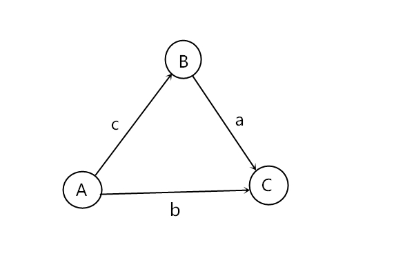
那么C - A的最大值其实就是求A到C的最短路径！将问题拓展到n个变量，m条不等式也是如此。
差分约束系统
差分约束系统（System of Difference Constraints），是求解关于一组变数的特殊不等式组之方法。如果一个系统由n个变量和m个约束条件组成，其中每个约束条件形如Xj - Xi <= Bk (i,j in [1, n], k in [1, m]),则称其为差分约束系统。亦即，差分约束系统是求解关于一组变量的特殊不等式组的方法。
考虑下面这一组不等式，并求解x3 - x0的最大值
不等式组的表示如下：
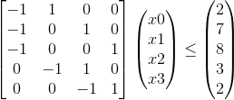
回到单个不等式上来，观察 x[i] - x[j] <= a[k]， 将这个不等式稍稍变形，将x[j]移到不等式右边，则有x[i] <= x[j] + a[k]，然后我们令a[k] = w(j, i)，再将不等式中的i和j变量替换掉，i = v， j = u，将x数组的名字改成d（以上都是等价变换，不会改变原有不等式的性质），则原先的不等式变成了以下形式：d[u] + w(u, v) >= d[v]。
这时候联想到SPFA中的一个松弛操作：1
2
3
4if(d[u] + w(u, v) < d[v])
{
d[v] = d[u] + w(u, v);
}
对比上面的不等式，两个不等式的不等号正好相反，但是再仔细一想，其实它们的逻辑是一致的，因为SPFA的松弛操作是在满足小于的情况下进行松弛，力求达到d[u] + w(u, v) >= d[v]，而我们之前令a[k] = w(j, i)，所以我们可以将每个不等式转化成图上的有向边。
对不等式组建图，如下所示：
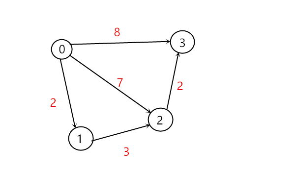
所以求解x3 - x0 的最大值就是求上图x0到x3的最短路径！
最大值变最小值
如果将不等式组的 <= 换成 >=号，其实就是求最长路罢了，稍微变换一下算法就能够求解了，或者利用不等式的性质，将所有的>=换成<=，然后跑一边最短路，再将结果乘个-1就行。
不等式标准化
如果不等式组即存在<=又存在>=，只要将符号都变为一样的即可。
如果不等式符号为<号，那么只需要将不等式改写成a - b <= c - 1的形式就可以了。
解的存在性
若图中存在负权回路，则不等式无解
若源点和终点不属于同一个连通分量，那么将无法到达，那么距离就为inf，就会出现无穷多的解。
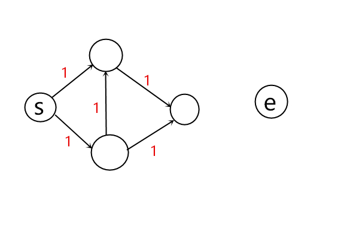
若没有负权回路和可到达，则存在解。
所以差分约束求解有三种情况：无解、有解、无穷多解。
END
溜了溜了～